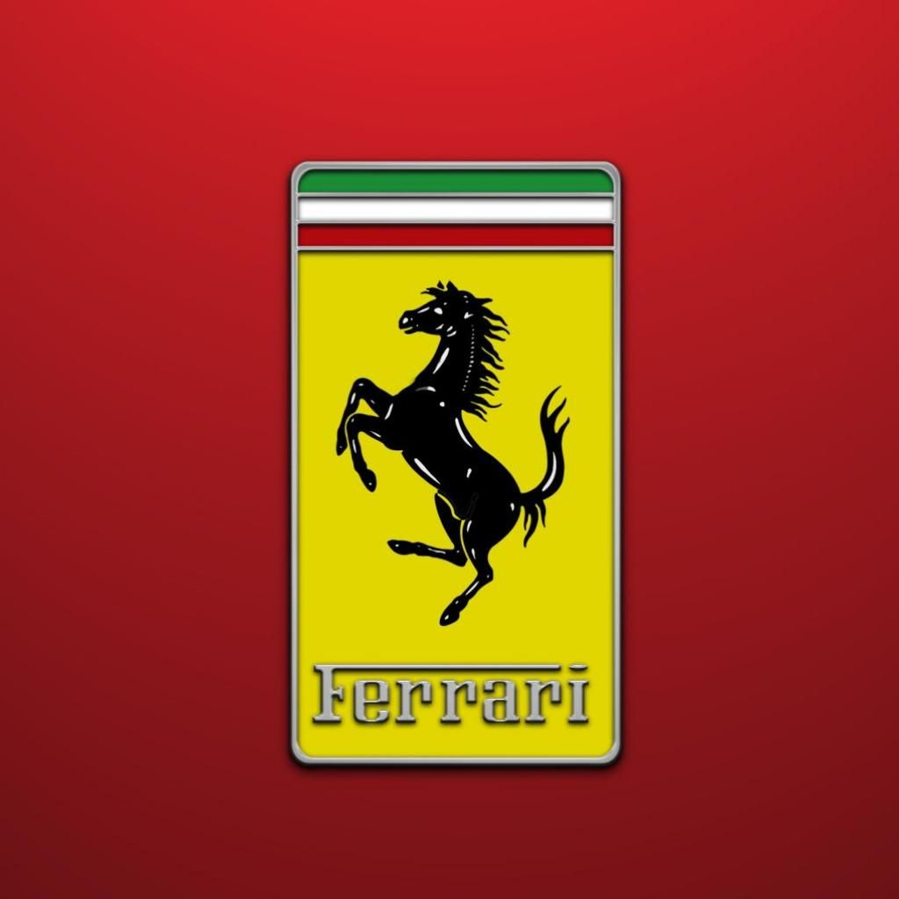
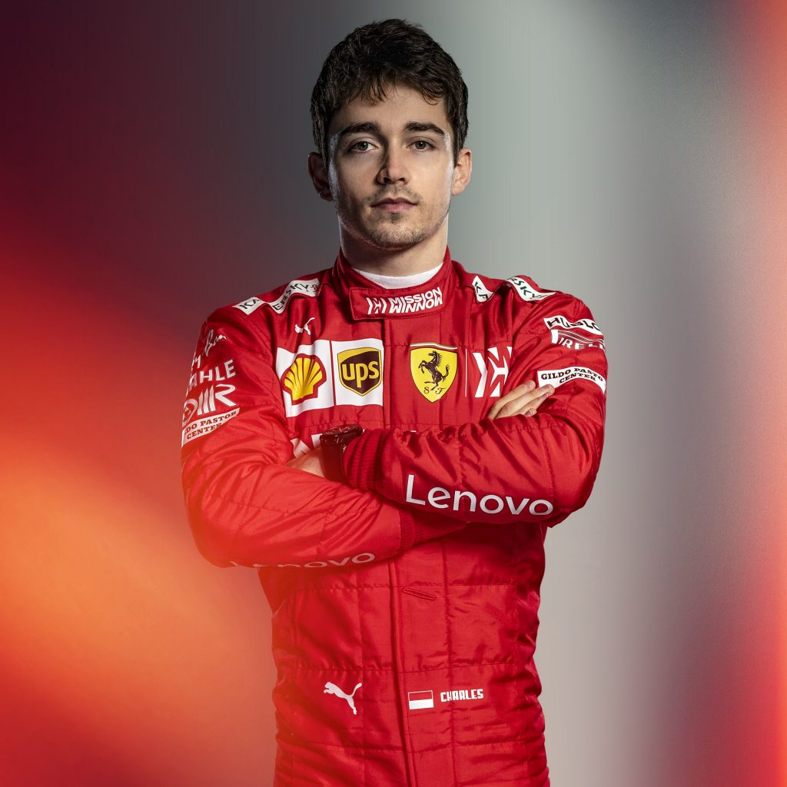

Ferrari SF90
La Scuderia Ferrari fondée en 1929 par Enzo Ferrari, est depuis 1947 la branche chargée de l'engagement en compétition des voitures de la marque Ferrari. De nos jours, la Scuderia Ferrari a exclusivement recentré son activité sur le championnat du monde de Formule 1, dont elle est à la fois une pionnière et un pilier, détenant la plupart des records (nombre de saisons, de Grands Prix disputés, de points inscrits, de victoires, de podiums, de pole positions, de meilleurs tours, de titres de champions des pilotes et des constructeurs, etc.).


Char. Leclerc
21 ans

Sebas. Vettel
31 ans